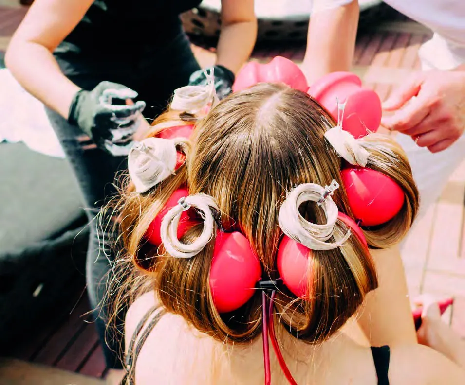
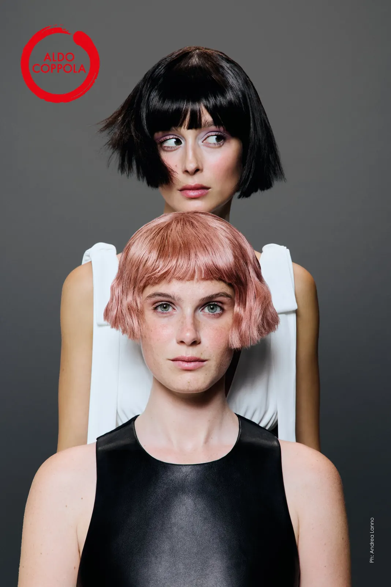

Live Show — парикмахерское шоу, которое Альдо Коппола придумал в 1983 году. Это был первый в мире формат, где стрижку и цвет показывают на сцене, как одежду на подиуме: со светом, музыкой и моделями. Сегодня творческая команда бренда проводит шоу в Милане дважды в год, и на него приезжают стилисты и колористы со всего мира.
Как проходит шоу
На сцене работают арт-директора и стилисты Академии Aldo Coppola. Зрители видят весь процесс: как отделяют пряди, как наносят цвет, как форма появляется прямо во время стрижки. Это не только зрелище, но и мастер-класс: в зале сидят профессионалы, которые потом будут повторять техники в своих салонах.

Коллекции последних сезонов
Каждый сезон у коллекции есть название и настроение:
- Dune — весна-лето 2022;
- Spazio Libero — осень-зима 2022/23;
- Oceano — весна-лето 2023;
- Oro — осень-зима 2023/24;
- Luce — весна-лето 2024;
- Rebel / Glam — осень-зима 2024/25.
На шоу коллекции весна-лето 2026 арт-директора выступали на сцене Teatro Lirico в Милане.

Кто едет из Москвы
Арт-стилисты московских центров проходят обучение в Италии и участвуют в шоу вместе с итальянскими коллегами. Так новые техники попадают в Москву без долгой «адаптации»: тот, кто стоял на сцене, потом работает в зале.
Как тенденции доходят до клиента
Важно понимать: подиумный образ — это высказывание, а не готовая причёска на каждый день. Стилист берёт из коллекции идею — форму, линию, оттенок — и адаптирует её под человека: структуру волос, черты лица, образ жизни.
Тенденция — это направление, а не правило. Хороший стилист покажет, как её носить именно вам.
Пресс-кампания 2026
Параллельно с коллекциями бренд каждый год выпускает рекламную кампанию. Кампанию 2026 года снимали в Италии.

Вопросы и ответы
Что такое Live Show Aldo Coppola?
Парикмахерское шоу, на котором команда бренда показывает новые коллекции стрижек, укладок и окрашиваний. Его придумал Альдо Коппола в 1983 году.
Как часто проходит Live Show?
Дважды в год — к сезонам весна-лето и осень-зима.
Участвуют ли в шоу стилисты из России?
Да, арт-стилисты московских центров обучаются в Италии и выходят на сцену вместе с итальянскими коллегами.
Источники
- Материалы Aldo Coppola о Live Show и коллекциях сезонов
- Презентация Aldo Coppola Russia: раздел «Грандиозные Live-Show»